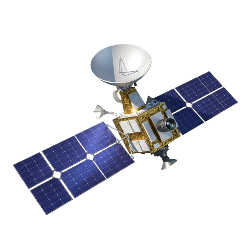
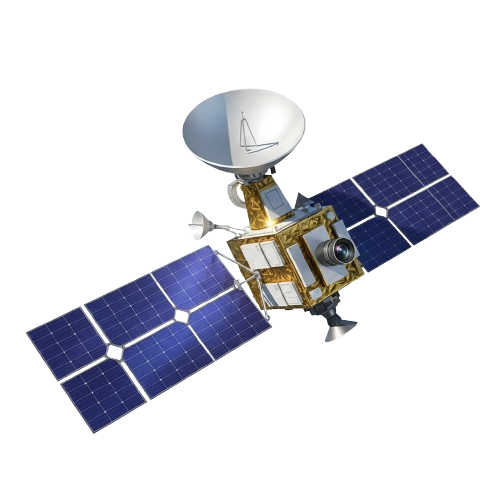

The Blue Planet
Earth is the third planet from the Sun and the only known world to support life. Its surface is about 71% water and 29% land, featuring diverse landscapes such as oceans, mountains, deserts, and forests. The planet’s atmosphere, rich in nitrogen and oxygen, protects life by filtering harmful solar radiation and regulating temperature. Earth has a natural satellite, the Moon, which influences tides and stabilizes its rotation. With a moderate climate, flowing water, and active geology, Earth provides a unique environment where life can thrive, making it a reference point for studying other planets in the Solar System.
 
